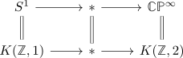
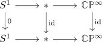
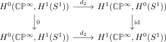

naturality of the cohomological serre spectral sequence
Proposition
The cohomological serre spectral sequence is natural with respect to
- maps of fiber sequences - in general only with respect to maps of fiber sequences
- module-homomorphism (when disregarding the multiplicative structure)
- ring-homomorphisms if seen as multiplicative spectral sequence
Proof
coefficients
module
A map of modules induces a map on filtered spectra
ring
A map of ring homomorphisms induces a map on algebras in filtered spectra (?)
natural
- todo
in general only in maps of fiber sequences
consider the fiber sequence

and the diagram

Then looking at the E_2 page would give

where $d_2$ is an isomorphism and all groups are abstractly isomorphic to $\mathbb{Z}$.
Here we use that the zero map is still an isomorphism on $H^0(S^1)$ since $S^1$ is connected.